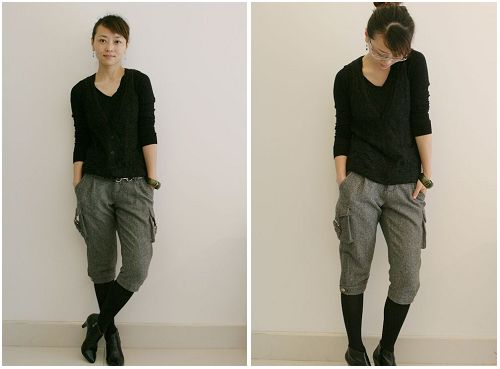

裤.搭配 @ Mar 24, 2010
超爱右上角那身黑色皮草外套+黑色皮裤+黑色高跟鞋的搭配。我有条5年前购入的黑色皮裤，出勤率只有两次，挺合身有型的裤子，实在找不到合适的机会穿，只能保佑自己能保持现在的体型N。。N。。年。时尚的服装如果不能在使用中给人们舒适感，等于浪费资源。即使再美，也只是看看。

**谢谢VINA和光光提供的皮裤搭配图片，俺的皮裤款式和左下角那款差不多。如果没有笔直又修长的双腿，还是需要直筒或者高跟鞋来掩饰的。当然还是小脚裤配高跟鞋更时尚些。


以及喜欢下面两款七分裤搭配。

N年前的PRINCH品牌，有些衣服真材实料到穿着障碍。之前没怎么穿过它，可能因为没找到合适的搭配。所以当时不喜欢的衣服，如果品质不错的话，尽管留着，没准儿过些年就变成喜欢的物件了。

11 Responses to “裤.搭配”
2010-03-25
http://street.1626.com/wp-content/uploads/2010/03/8113.jpg
这张照片的皮裤搭配也不错。推荐给你。
2010-03-25
还有这里 http://stylebytes.net/wp-content/uploads/2008/02/117.jpg
还有这里 http://stylebytes.net/wp-content/uploads/2008/02/210.jpg
都很好看，你赶快这么穿吧。
2010-03-25
爱死你门俩了，超美，搜集到茶上。
2010-03-25
我想问女人是不是天生就有购物狂基因，什么都不多，就是衣服和鞋多。
2010-03-25
应该说：什么都不缺，就缺衣服和鞋（诶。。。可能还有包）。
2010-03-25
哈哈哈哈哈哈哈,Helen，我真觉得你很幽默哎。
2010-03-25
向茶同学泣血求教：前一阵子打折，某人头脑发热，全然不顾产后腆出的小腹和虎背熊腰，购进一件无袖露肩高领的紫色羊毛连衣裙，还是收腰款的~~~该怎么穿？？还有挽救的余地吗？？
2010-03-26
哦~可以在外面加件小风衣或者小西服，简单利落的款式搭配羊毛裙。反正体型会恢复，以后也能穿的：D
2010-03-26
你的搭配很好看喔
2010-03-26
我很喜欢姐姐的穿衣风格，成熟知性~
2010-03-27
多谢赐教！！
我开始老想着在里面配个什么衣服，却没想到可以在外面罩点东西，呵呵呵。
高人就是高！
Leave A Reply
存档只读，评论已关闭。